3 Р-ичные системы счисления
3.1 Представление чисел в Р-ичной системе счисления3.2 Арифметические действия в Р– ичной системе счисления
3.3 Двоичная арифметика
3.4 Перевод чисел из Р-ичной системы счисления в десятичную
3.5 Перевод чисел из десятичной системы счисления в Р-ичную
Вопросы и задачи для самоконтроля
3.1. Представление чисел в p-ичной системе счисления
Итак, “вес” каждой цифры в Р-ичных системах счисления задает последовательность чисел:
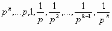
При этом число P называют основанием системы счисления.
Напомним, что алфавитом системы счисления называют совокупность различных цифр, используемых для записи чисел.
Если основание системы счисления p ≤ 10, то в качестве алфавита используют арабские цифры: 0 ,1, 2…, p–1 (т.е. количество цифр равно p, и цифры p нет!). Если основание системы счисления 10 < p ≤36, то в качестве дополнительных цифр используют заглавные буквы латинского алфавита.
Пример 1.
- Десятичная система счисления, p=10; цифры 0,1,2,…9; (т.е. нет цифры 10, а вот число 10 есть).
- Двоичная система счисления, p=2; цифры 0,1.
- Шестнадцатиричная система счисления, p=16; цифры 0,1,2,…,9, A,B,C,D,E,F. Т.е в шестнадцатиричной системе счисления цифра A соответствует числу 10, B – 11, C – 12, D – 13, E – 14, F– 15.
При p >36 единых правил для записи чисел не существует.
Для того, чтобы знать, в какой системе счисления записано число, основание системы счисления ставят в качестве индекса справа внизу:
Пример 2.
1110, 112.113.
Первое из этих чисел записано в десятичной, второе – в двоичной, третье – в троичной системах счисления. Несмотря на то, что выглядят они одинаково, числа обозначают разные: 11, 3 и 4 соответственно.
В курсе высшей математики доказывается следующая теорема:
Теорема. Пусть Р — произвольное натуральное число и Р > 1. Тогда существует и единственно представление произвольного числа x в виде полинома:
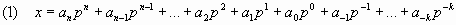
Здесь Р — основание системы счисления, ai — цифры в системе счисления по основанию Р.
Тогда запись числа x представляет собой просто перечисление коэффициентов полинома (1) с указанием позиционной запятой.
Формула (1) называется развернутой записью числа, (2) – свернутой (сокращённой) записью числа в p-ичной системе счисления.
Пример 3. При p=10 число
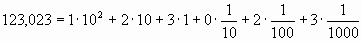
Слева мы видим свернутую запись числа, справа - развёрнутую.
Если же это число записано в пятиричной системе счисления (p=5), то его развёрнутая запись выглядит следующим образом:
123,0235 =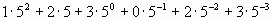.
Вернемся теперь к понятию базиса. В линейной алгебре это понятие так же возникает, и суть его в следующем: если вектора
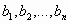
- базис, то любой вектор x является их линейной комбинацией:
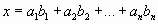
Здесь прослеживается явная аналогия с базисом системы счисления: любое число является линейной комбинацией элементов базиса.
Чтобы научиться производить арифметические действия в какой-либо системе счисления, необходимо прежде всего научиться представлять в ней натуральные числа.
Алгоритм записи чисел в p-ичной системе счисления:
1) Если число меньше p, то оно записывается одной цифрой этой системе счисления: 0,1,…, p-1.
2) Если число равно p, то оно записывается в виде 10p ( это следует из развернутой формы записи числа).
3) Если число больше p, воспользуемся следующим правилом, как по известной записи числа ap получить запись числа ap+1(т.е. запись следующее получить из записи предыдущего):
а) Если последняя (крайняя справа) цифра числа ap меньше p-1, то в числе ap+1 все цифры, кроме последней, будут совпадать с цифрами числа ap, а последняя цифра будет на единицу больше.
б) Если последняя цифра числа ap равна p-1, то последняя цифра числа
ap +1 будет 0, а остальные цифры числа будут представлять число, увеличенное на 1 по правилам а), б).
Пример 4. Рассмотрим этот алгоритм сначала на примере десятичной системы.
Согласно п.1 в ней будут записываться числа 1, 2, 3,..9.
Следующее число равно основанию системы счисления и оно записывается как 10 согласно п.2.
Далее числа записываются согласно п.3.а) 11, 12, 13,…19
Теперь п.3.б) - 20 и т.д.
Пример 5. Рассмотрим этот же алгоритм при p=5.
Согласно п.1 записываются числа 0, 1, 2, 3, 4.
Число пять согласно п.2 записываем как 10.
По п.3.а) записываем числа: 11 (шесть), 12 (семь), 13 (восемь), 14 (девять).
По п.3.б) записываем число 20 (восемь) и далее по п.3)а) 21, 22, 23 и т.д.
Пример 6. Запишем числа от 1 до 24 в двоичной, восьмеричной и шестнадцатиричной системах счисления:
| Десятичное | Р=2 | Р=8 | Р=16 |
| 0 | 0 | 0 | 0 |
| 1 | 1 | 1 | 1 |
| 2 | 10 | 2 | 2 |
| 3 | 11 | 3 | 3 |
| 4 | 100 | 4 | 4 |
| 5 | 101 | 5 | 5 |
| 6 | 110 | 6 | 6 |
| 7 | 111 | 7 | 7 |
| 8 | 1000 | 10 | 8 |
| 9 | 1001 | 11 | 9 |
| 10 | 1010 | 12 | A |
| 11 | 1011 | 13 | B |
| 12 | 1100 | 14 | C |
| 13 | 1101 | 15 | D |
| 14 | 1110 | 16 | E |
| 15 | 1111 | 17 | F |
| 16 | 10000 | 20 | 10 |
| 17 | 10001 | 21 | 11 |
| 18 | 10010 | 22 | 12 |
| 19 | 10011 | 23 | 13 |
| 20 | 10100 | 24 | 14 |
| 21 | 10101 | 25 | 15 |
| 22 | 10110 | 26 | 16 |
| 23 | 10111 | 27 | 17 |
| 24 | 11000 | 30 | 18 |
Теперь перейдем к представлению p – ичных дробей.
Рассмотрим обыкновенные дроби, записываемые с помощью отношения числителя и знаменателя, наибольший общий делитель которых равен 1. Такие дроби будут точно представимы конечной p – ичной дробью, если существует такое натуральное число m, что при умножении на него знаменателя дроби можно получить некоторую степень числа p. Если такое число m существует, умножим числитель и знаменатель на m, представим произведение в p – ичной системе счисления, дополним его до k цифр нулями слева. Полученное число, записанное после запятой, будет p – ичной дробью.
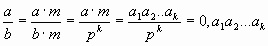
Если такого m не существует, то в p – ичной системе счисления дробь окажется бесконечной периодической.
Пример 7. Переведём рациональную дробь в десятичную.
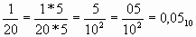
Пример 8. Переведём рациональную дробь в двоичную.
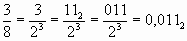
Пример 9. Если мы попытаемся подобным образом представить число 1/3 в виде десятичной дроби, то мы не сможем подобрать такого числа m, при умножении на которое в знаменателе получилось бы десять в некоторой степени. Т.о. 1/3 - не представима в виде десятичной конечной дроби, дробь получается бесконечная периодическая:
0,3333…=0,(3)
Из формулы (1) следует, что 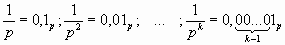
3.2 Арифметические действия в p – ичной системе счисления
В теоретическом отношении все позиционные системы счисления равноправны. Для всех систем счисления справедливы одни и те же законы арифметики:
- коммутативный: a+b=b+a,
- ассоциативный: a+(b+c)=(a+b)+c,
- дистрибутивный: a*(b+c)=a*b+a*c.
Арифметические действия над числами в любой позиционной системе счисления производятся по тем же правилам, что и в десятичной системе, т.к. все они основываются на правилах выполнения действий над соответствующими полиномами.
Пример 10. Напомним, как происходит сложение в десятичной системе счисления:
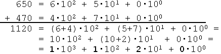
Если в скобках получается число s, большее чем P, то приводим его к виду P + (s – P).
Коэффициенты при степенях десятки в получившемся полиноме и дают цифры результирующего числа.
Пример 11.
Рассмотрим пример сложения в троичной системе счисления, т.е. p=3:
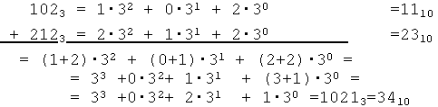
Для контроля справа мы перевели числа в десятичную систему счисления и в ней их сложили.
Кроме того, в p-ичной системе счисления умножение на число вида pm сводится к простому переносу запятой на m разрядов вправо или влево (в зависимости от знака m)
Пример 12.
p=10; 123,1410 ∙103=12314010;
p=2; 101,100112∙23=101100,112;
101,100112∙2-1=10,1100112.
Из сказанного можно сделать следующий вывод: для того, чтобы производить арифметические операции в р-ичной системе счисления, нет необходимости сначала переводить числа в десятичную и в ней умножать, складывать или делить. Эти арифметические действия можно производить, не переходя из p-ичной системы счисления в десятичную. Надо только помнить, что сложение и умножение р-ичных чисел опирается на таблицы сложения и умножения в р-ичных цифр.
В Р-ичной системе счисления таблица сложения представляет собой результаты сложения каждой цифры алфавита Р-ичной системы с любой другой цифрой этой же системы. Составление такой таблицы выполняется по следующему правилу: каждый элемент таблицы равен предыдущему в строке или в столбце, увеличенному на единицу по правилам прибавления единицы в Р-ичной системе счисления. Первые вычисляемые элементы в строке или столбце равны базовой цифре этой же строки или столбца, так как соответствуют прибавлению к ней нуля. В приведенных ниже таблицах базовые строки и столбцы выделены светло-серым цветом.
Для выполнения умножения двух многозначных чисел в Р-ичной системе счисления надо иметь таблицу умножения в этой системе. Вычисление элементов такой таблицы представляет собой прибавление базовой цифры столбца к числу, стоящему на одну клетку выше. При этом неопределенными оказываются лишь элементы первой строки (они не имеют вышестоящих клеток), однако, первая строка соответствует умножению базовой цифры строки на 0, результат такого умножения в любой системе счисления равен 0.
3.3 Двоичная арифметика
Рассмотрим более подробно двоичную арифметику, т.к. именно в этой системе производятся компьютерные вычисления.
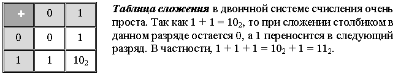
Пример 13. Рассмотрим примеры на сложение двоичных чисел
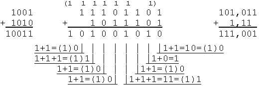
При вычитании важно помнить следующее: когда необходимо провести “заем единицы” бóльшего разряда, то в десятичной системе счисления такая “единица” равна 10. Значит в P-ичной системе счисления это будет число, равное P. Тогда в двоичной системе счисления “занимается” число 2, и, при вычитании из него единицы, получим единицу, а не ноль!
Пример 14. Вычитание двоичных чисел.
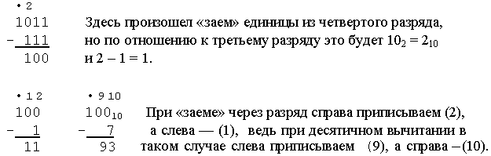
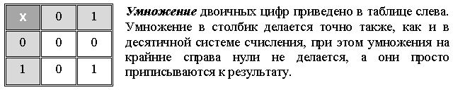
Пример 15. Умножение двоичных чисел.
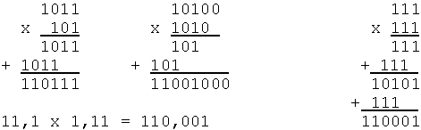
Из приведенных примеров видно, что в двоичной системе счисления операция умножения сводится к сдвигам множимого и сложению промежуточных результатов. Этот алгоритм достаточно просто реализуется в компьютере. Умножение двоичных дробей делается совершенно аналогично умножению десятичных дробей (т.е. у результата отсчитывается суммарное количество знаков после запятой).
Операция деления выполняется по правилам, подобным делению в столбик в десятичной системе счисления, то есть в качестве промежуточных вычислений необходимо выполнять действия умножения и вычитания. Но в двоичной системе счисления умножение делителя делается только на 0 или 1, поэтому наиболее сложной остается операция вычитания, которую нужно выполнять очень внимательно.
Пример 16. Деление двоичных чисел.
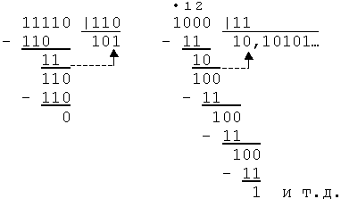
Как видно из примеров, в результате деления может получиться как конечное число, так и бесконечная периодическая дробь, причем заранее это неизвестно. Поэтому процесс деления нужно прекращать или при выделении периода, или до получения нужного количества знаков после запятой, т.е. записывать число с некоторой погрешностью.
3.4 Перевод чисел из p-ичной системы счисления в десятичную
Если требуется перевести вещественное число с непериодической дробной частью, то перевод числа делается довольно просто:
-каждую цифру числа в p-ичной системе счисления переводят в десятичное число;
-применяют формулу (1) из п.3.1, причем умножение и сложение выполняются по правилам десятичной арифметики. Для удобства, над числом можно записать степени основания Р, начиная с нуля для первой цифры перед запятой.
Пример 17. Перевести в десятичную систему счисления.

Если дробная часть числа содержит период, её перевод в десятичную систему происходит сложнее. Для того чтобы объяснить алгоритм перевода, рассмотрим сначала чисто периодическую дробь вида:
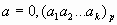
Умножим её на pk:
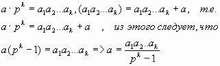
Т.е. для записи исходного числа мы получили обыкновенную рациональную дробь, в которой числитель записан в p-ичной системе счисления. Если мы его переведем в десятичную систему счисления, то получим рациональную дробь, записанную в десятичной системе счисления и равную числу а.
Опираясь на данный факт, можно записать следующий алгоритм:
Алгоритм перевода периодической p-ичной дроби в десятичную
Пусть дробь имеет вид:

1. Представим дробь в виде суммы периодической и непериодической частей:
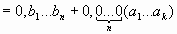
Непериодическую часть переводим в 10-ю систему счисления по формуле (1) .
2. Периодическую часть представляем как чисто периодическую дробь, умноженную на p-n:
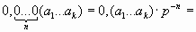
3. Периодическую часть записываем в виде обыкновенной дроби в p-ичной системе счисления, где в знаменателе, равном pk-1, стоят максимальные цифры p-ичной системы счисления и количество этих цифр равно k.
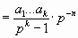
4. Заменяем числа в числителе и знаменателе на соответствующие десятичные и только потом выполняем деление (уже в 10-ой системе счисления).
Пример 18. Перевести в десятичную систему счисления 0,10(1001)2.
1 шаг. Умножаем периодическую часть на P-2, т.е. Р в степени, равной количеству цифр до периода и прибавляем к этому непериодическую часть:
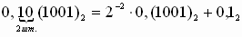;
Непериодическую часть Р-ичной дроби переводим в десятичную по формуле (1):
0,12 = 2–1·1 = 1/2
2 шаг. Периодическую часть записываем в виде обыкновенной дроби в Р-ичной системе счисления, где в знаменателе стоят максимальные цифры Р-ичной системы счисления, количество этих цифр равно количеству цифр в периоде:
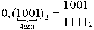
3 шаг. Заменяем числа в числителе и знаменателе на соответствующие десятичные числа, и только потом выполняем деление (уже в десятичной арифметике).
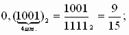
Ответ: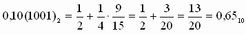
Пример 19. Перевести в десятичную систему счисления 0,0(0110)2
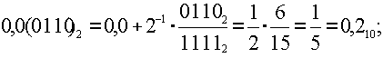
Пример 20. Перевести в десятичную систему счисления 123,2(21)4
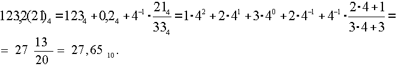
Пример 21. Перевести в десятичную систему счисления 0,010(20)3
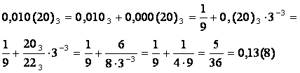
3.5 Перевод чисел из десятичной системы счисления в p-ичную
Для перевода вещественного числа из 10-ой системы счисления в p-ичную необходимо выполнить отдельно перевод целой части числа и отдельно – дробной.
Воспользуемся формулой (1). Нам необходимо найти разложение числа в виде:
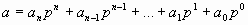
Вынесем множитель p за скобку.
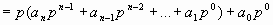
Если полученное выражение поделим нацело на p, то в остатке будет a0. Опять вынесем p.
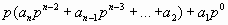
если опять поделим на p, в остатке будет и так далее. Наконец останется
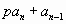
Когда последний раз поделим на p, в остатке будет 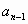 и частное равно 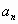.
Из этого следует:
Алгоритм перевода десятичного числа в p-ичную систему счисления:
1. Разделим исходное число нацело с остатком на основание новой системы счисления p;
2. Целое частное примем за исходное число и перейдём к п.1.
3. Процесс заканчивается, когда частное станет меньше делителя и это будет старший (левый) разряд числа. Затем последовательно выписываем остатки от деления, начиная с последнего.
Пример 22. Перевод 1451 в 12-чную систему счисления:
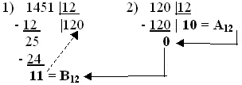
145110 = A0B12.
В данном примере частным и одним из остатков от деления получились числа 10 и 11, которые в 12-чной системе счисления записываются цифрами A (10) и B (11). При делении нужно быть очень внимательным, чтобы, например, у первого частного не “потерять” ноль (т.е. не получить 12 вместо 120).
Для проверки обязательно нужно делать обратный перевод из Р-ичной в десятичную систему счисления с помощью формулы (1):
A0B12 = 10∙122 + 0∙121 + B∙120 = 10∙144 + 11 = 1451.
Пример 23. Перевести число 46 в двоичную систему счисления
| 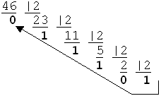 | Процесс деления заканчивается, когда частное станет строго меньше Р — это будет старший (левый) разряд числа; затем последовательно выписываем остатки от деления, начиная с последнего:4610 = 1011102. |
В компьютере при переводе из десятичной системы счисления в двоичную используется другой алгоритм (мы его будем называть компьютерным, в отличие от предыдущего “ручного”). Он основан на выделении максимальной степени двойки.
Алгоритм компьютерного перевода из десятичной системы счисления в двоичную.
Из десятичного числа вычесть число, равное максимально возможной степени двойки, затем из остатка вычесть максимальную степень двойки и т.д., ставя 1 в тех позициях, где вычитание возможно, и 0 там, где нет.
Пример 24. Перевести числа 13 и 25 из десятичной системы счисления в двоичную с помощью компьютерного алгоритма.
Процесс вычитания максимальной степени
изображён справа. В результате получим:

Теперь рассмотрим перевод конечной десятичной дроби в p-ичную.
Т.к. целую часть числа мы переводить уже научились, рассмотрим перевод только дробной части числа, т.е. будем считать, что целая часть равно нулю.
Опять воспользуемся формулой (1) для дробной части числа:
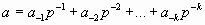 (дробь правильная <=>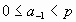)
Умножим её на p:
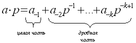
Число 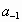 может быть равно нулю или другому числу, но его всегда можно записать одной цифрой в p-ичной системе счисления. Это следует из того, что 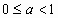 и 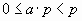 => целая часть уж точно меньше p. Таким образом, мы получим первую цифру дробной части числа в p-ичной системе счисления. Если целую часть откинуть и процесс повторить, получим 2-ую цифру и т.д. Отсюда следует алгоритм:
Алгоритм перевода конечной десятичной дроби в p-ичную
систему счисления:
1. Умножим исходное число на p (основание новой системы счисления). Целая часть полученного произведения будет новой цифрой после запятой в искомом представлении числа. Она записывается ровно одной цифрой в p-ичной системе счисления.
2. Отбрасываем целую часть полученного произведения, а дробную часть рассматриваем как исходное число и повторяем п.1.
3. Процесс перевода заканчивается в следующих случаях:
-дробная часть станет равной нулю;
-выделится период (т.е. дробная часть окажется равной получавшейся ранее дробной части);
-достигнута требуемая точность (столько-то знаков после запятой).
Пример 25.
Записать 0,375 в двоичной системе счисления.
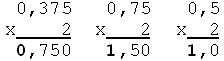
Ответ: 0,37510 = 0,0112
Пример 26.
Записать 0,123 в системе счисления с основанием Р = 5.
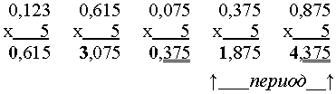
Ответ: 0,12310 = 0,030(14)5
Здесь получилась периодическая дробь.
Перевод вещественного числа (т.е. имеющего и целую и дробную части) в Р-ичную систему счисления осуществляется в два этапа: отдельно переводят целую часть, а затем отдельно — дробную.
Как перевести периодическую дробь из десятичной системы счисления в р-ичную? Для периодических дробей можно пользоваться алгоритмом перевода непериодических дробей, но надо знать правила умножения периодических дробей (что очень непросто). Проще сделать так: любая периодическая дробь может быть представлена в виде обычной рациональной, тогда числитель и знаменатель надо перевести в p-ичную систему счисления и уже в ней столбиком поделить.
Пример 27. Перевести в двоичную систему 0,(3).
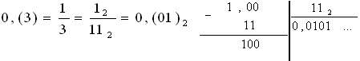
При делении столбиком (справа) получается периодическая дробь.
Проверка (алгоритм перевода периодической дроби в десятичную систему счисления):
Вопросы и задачи для самоконтроля
Представление целых чисел в р-ичных системах счисления
1. В каких р-ичных системах счисления 2р+2р=4р?
2. Записать в системе счисления с основанием 234 число 235.
3. Во сколько раз увеличится число 3256 если приписать к нему справа один ноль?
4. Число, записанное в десятичной системе счисления, оканчивается на 5. Будет ли оно делиться на 5, если записать его в троичной системе счисления?
5. Существуют ли системы счисления p и q, в которой 12р> 21q?
6. Для десятичного числа 371 найти систему счисления, в которой данное число будет представлено теми же цифрами, но записанными в обратном порядке.
7. Один чудак-математик написал такую автобиографию: ” Я окончил курс университета 44 лет от роду. Спустя год, 100-летним молодым человеком, я женился на 34-летней девушке. Незначительная разница в возрасте – всего 11 лет – позволяла иметь общие интересы и мечты. Вскоре у нас была семья из 10 детей. Жалованья я получал всего 200 рублей, из которых 1/10 приходилось отдавать сестре, так что мы с детьми жили всего на 130 рублей в месяц….”
Вопрос: в какой системе счисления записана эта автобиография?
Представление дробей в р-ичных системах счисления
8.Записать дробь в р-ичной системе счисления
– 1/4; р =10;
– 3/8; р =2;
– 5/6; р =12;
– 3/4; р =16;
Двоичная арифметика.
1.Сложить двоичные числа (слагаемые записаны в “столбик”)
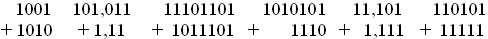
2. Вычесть двоичные числа
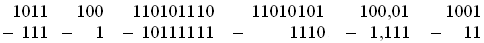
3. Умножить двоичные числа
11 *11; 1011*101; 10100*1010; 11,1*1,11; 10,11 * 11,1;
1,111 *11,01; 110101 * 1110;
4. Поделить двоичные числа
11110 : 110; 1000 : 11; 1111 : 101; 100001 : 110;
1001000: 111–до 5-го знака после запятой
5. Восстановить цифры двоичных чисел, на месте которых стоят *.
а) 1*01 + 1**=10100
б) **0*0*1**1 + 10111*10**=100*1*00010
в)***0**00 - 11*11*11=1101*1
Перевод чисел из одной системы счисления в другую.
1. Перевести в десятичную систему счисления:
11112; 11113; 11114; 11115; 11,01012; CD16; AB,CD16;
2. Перевести из десятичной системы счисления в р-ичную:
– 1451, р =12;
– 254; 255; 256; р =2;
– 254; 255; 256; р =16;
– 23, р =2;3;4;16;23;
3. Перевести из десятичной системы счисления в р-ичную:
– 0,375; р =2;
– 0,123; р =5;
– 0,8125; 0,2; р =2;
– 5,375; р =2;
– 11,55; р =2;
4. Перевести из двоичной системы счисления в десятичную:
0,0(0110); 0,0(1001); 0,1(1100); 0,010(0011); 101101,01(1001);
5. Перевести в десятичную систему счисления 123,2(21)4; 123,40(30)5;
6. Перевести из десятичной системы счисления в двоичную 0,(3)
7*. Перевести из десятичной системы счисления в 16-ричную 0,(7)